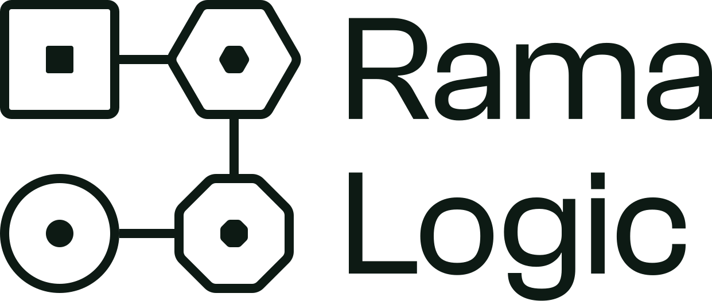
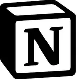
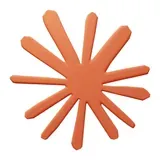
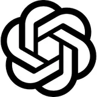
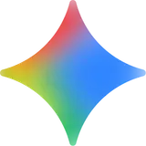

Proposition · 7 octobre 2026
Un seul endroit où Beyond Crew se pilote.
Coaching sportif par abonnement · 3 associés
Préparé pour
Caroline, Yannec et Nicolas
Beyond Crew
Préparé par
Sylvain Ramaradjou
Rama Logic
Mission
Le socle de pilotage
Notion + IA

Proposition · Beyond Crew 02 / 27Sommaire
Cinq partiesCe qu'on va dérouler.
On relit tout ensemble mardi, et vous me dites ce qu'il faut ajuster.
- 01
Le décor
Ce que j'ai retenu de notre échange du 5 octobre
- 02
Ce que j'y vois
La cause sous les frictions, et ce qu'elle empêche
- 03
La méthode
Le socle, pourquoi le contexte, trois étapes et le calendrier
- 04
La preuve
Deux clients comparables et mes engagements
- 05
L'offre
Ce qui est compris, ce qui ne l'est pas
- 01Le décor
- 02Ce que j'y vois
- 03La méthode
- 04La preuve
- 05L'offre
Le décor
Là où Beyond Crew en est aujourd'hui, dans vos mots.
Partie 01 / 05
01
1D'abord
Où vous en êtes
2Ensuite
Trois frictions
3Enfin
Ce que ça coûte, aujourd'hui et demain
Le décor
Où vous en êtesCinq mois d'existence, et ça tourne déjà.
Une plateforme de coaching sportif par abonnement, lancée en mai 2026. Les membres s'abonnent, les coachs sont placés sur les créneaux et rémunérés au cours donné.
La marque est déposée, la société se crée, et l'application sort courant octobre. Côté outils : plusieurs groupes WhatsApp, Google Workspace, des Google Sheets, un Notion déjà ouvert. Vous avez décidé de garder Google Workspace et Notion ensemble.
~400
inscrits sur le site
~180
abonnés, moitié à l'année
3
associés
4 à 6
personnes à équiper
Le décor
Dans vos motsTrois frictions, dans vos mots.
01 · Information dispersée
« On a notre groupe WhatsApp qui part un peu dans tous les sens parce qu'on s'envoie des documents. »
Les échanges vivent dans plusieurs groupes, des mails et le Drive.
Rien ne dit où chercher
02 · Notion sous-utilisé
« Je pense qu'on sous-utilise Notion par rapport à ses pleines capacités, clairement. »
L'outil est là, sans nomenclature ni structure commune.
Pas encore de structure commune
03 · Tâches répétitives
« … nous permettre de peut-être sauver 80 % de notre temps sur des tâches très rébarbatives. »
Administratif, process, finance : fait à la main par les associés.
Le temps des associés y passe
Yannec l'a dit aussi
« Des douleurs, pas vraiment. Je trouve que c'est assez fluide. » On ne parle donc pas de réparer, on parle de structurer avant de grandir.
Le décor
Ce que ça coûte aujourd'huiInformation dispersée · le temps passé à chercher
~29 700 €
par an, à quatre personnes.
Hypothèse · 30 min par jour × 220 jours × 4 personnes × 67,5 €/h. À valider ensemble.
Temps des associés passé sur les tâches répétitives
Non mesuré
Environ 220 inscrits qui n'ont pas encore d'abonnement
Non chiffré
Renouvellement des abonnés annuels, à partir de mai 2027
À préparer
Ce que je chiffre, et ce que je ne chiffre pas
Je ne chiffre que ce que le socle traite à coup sûr. Les trois autres lignes sont réelles, je ne vais pas leur inventer un montant. Et ce n'est pas le plus gros coût.
Le décor
Ce que ça coûte demainLe plus gros coût, c'est de grandir.
Pour les personnes, et pour les agents aussi.
Pour les personnes
Chaque arrivée se fait réexpliquer l'histoire.
À trois, vous vous parlez plusieurs fois par semaine et ça tient. À six, et au-delà si l'équipe grandit, plus personne n'a tout en tête, et c'est un associé qui réexplique.
Ce que ça consomme · le temps des associés
Pour les agents
Un agent ne lit ni WhatsApp, ni votre mémoire.
Yannec construit déjà des agents. Sans un endroit où lire vos objectifs, vos projets et vos décisions, chacun doit être nourri à la main, à chaque fois.
Ce qui manque · un contexte à lire
Ce que ça veut dire
Ce qui tient à trois ne tient ni à une équipe qui double, ni à des agents. Ce coût ne se voit pas aujourd'hui : il se paie le jour où vous grandissez.
- 01Le décor
- 02Ce que j'y vois
- 03La méthode
- 04La preuve
- 05L'offre
Ce que j'y vois
La cause qui est sous les trois frictions.
Partie 02 / 05
02
1D'abord
La cause racine, en un calcul
2Ensuite
Ce qu'elle empêche de construire
Ce que j'y vois
La cause racineVotre information a des outils, pas d'adresse.
Chaque sujet vit là où il a été dit en dernier.
À quatre personnes, aujourd'hui
44
endroits où une information a pu être dite.
Calcul · 11 conversations possibles (à 2, à 3 ou à 4) × 4 canaux : WhatsApp, mail, Drive, oral
| Équipe | Liens deux à deux | Conversations possibles | Endroits |
|---|---|---|---|
| 4 personnes | 6 | 11 | 44 |
| 6 personnes | 15 | 57 | 228 |
| Si vous passez à 10 | 45 | 1 013 | 4 052 |
Pourquoi ça tient encore
À trois associés qui se parlent plusieurs fois par semaine, ça tient. C'est la taille de l'équipe qui fait tenir le système, pas son organisation.
Ce que j'y vois
Ce que ça empêcheSans adresse, pas de contexte.
Si rien ne change
L'application sort, la société se crée, quatre à six personnes y travaillent déjà. Chaque nouveau sujet ajoute un canal. Et l'IA que vous voulez brancher n'aura rien de fiable à lire : elle répondra des généralités.
- 01
Impossible à suivre.
Dans une équipe qui grandit, plus personne ne sait où est la dernière version d'une décision sans demander.
- 02
Impossible de capitaliser.
Ce qui a été compris une fois doit être réexpliqué à la personne suivante. Rien ne s'accumule.
- 03
Donc impossible de construire du contexte.
Or c'est de contexte qu'une équipe qui grandit et une IA ont besoin, l'une comme l'autre.
- 01Le décor
- 02Ce que j'y vois
- 03La méthode
- 04La preuve
- 05L'offre
La méthode
Ce qu'on construit, pourquoi comme ça, et en combien de temps.
Partie 03 / 05
03
1D'abord
Là où on va, et le socle
2Ensuite
Pourquoi le contexte
3Enfin
Trois étapes, un calendrier, votre temps
La méthode
Là où on vaAujourd'hui
Les documents circulent sur WhatsApp
Plusieurs groupes, selon les sujets
Les tâches se répartissent à l'oral
Lors de vos points de la semaine
Notion est ouvert, mais sous-utilisé
Pas encore de nomenclature claire
→Demain
Chaque sujet a sa page
Documents et décisions au même endroit
Chaque tâche a un responsable et une date
Visible sans attendre le prochain point
Notion porte objectifs, projets, tâches, réunions
Avec une nomenclature commune
Le test, à la fin
Un nouvel arrivant comprend où en est Beyond Crew sans vous poser la question.
La méthode
Le socleQuatre bases reliées, et l'IA par-dessus.
Les objectifs se déclinent en projets, les projets en tâches et en réunions. Google Workspace reste en place, on ne remplace rien.
- 01
Objectifs
Les objectifs du trimestre et leurs résultats clés.
Déclinés en projets
- 02
Projets
L'application, la création de la société, le contenu.
Déclinés en tâches et réunions
- 03
Tâches
Qui fait quoi, pour quand. Une vue par personne.
Chacune sert un projet
- +04
Réunions
Comptes rendus et décisions, transformés en tâches.
Chacune sert un projet
L'IA de Notion, branchée sur ces quatre bases
« Où en sont nos objectifs ? » « Qu'a-t-on décidé à la dernière réunion ? » « Qu'est-ce qui est en retard sur l'application ? » Elle répond avec votre contexte, pas avec des généralités.
Proposition · Beyond Crew
14 / 27
Pourquoi cette méthode
Les modèles, tout le monde les a. Le contexte est roi.
Demain, une autre plateforme de coaching aura les mêmes modèles et les mêmes agents que vous. Pas votre contexte.
1 · Contexte · ce que le socle construit
Des réponses justes. L'IA répond comme quelqu'un de chez vous.
2 · Agents · l'étape suivante
Du temps rendu à l'équipe. Ils font le répétitif à partir de ce contexte.
3 · Modèles · interchangeables
Jamais à recommencer. Un meilleur modèle sort, votre contexte reste.
Beyond Crew

ObjectifsProjetsTâchesRéunions



La méthode
Les autres cheminsEt pourquoi pas autrement ?
Trois autres chemins, tous raisonnables.
Option 01
Le construire vous-mêmes
Vous en êtes capables, Yannec construit déjà des agents. Mais ce serait du temps d'associé pris sur la sortie de l'application. Je livre un socle éprouvé, formation comprise, en six semaines, vous gardez vos soirées.
Ce que ça coûte · votre temps
Option 02
Rester sur Drive et WhatsApp
Ça marche aujourd'hui, vous l'avez dit. Mais ça ne se cherche pas, ça ne se relie pas, et une IA ne peut pas s'appuyer dessus. Le socle garde vos habitudes et leur donne une structure.
Ce qui manque · le contexte
Option 03
Attendre l'application
Elle va gérer les membres, les coachs et les créneaux. Elle ne pilotera ni vos objectifs, ni vos projets, ni vos décisions d'associés. Ce sont deux étages différents.
Ce qui manque · le pilotage
La méthode
6 semaines, puis 2 semaines d'usageTrois étapes pour y arriver.
Six semaines, puis un point d'ajustement après deux semaines d'usage.
01
1 semaine19 → 23 octobre
Le cadrage
Un atelier avec vous trois, puis l'architecture validée.
02
4 semaines26 octobre → 20 novembre
La construction
Deux sprints de deux semaines : Objectifs et Projets, puis Tâches et Réunions. Avec les vues par rôle, la page d'accueil, et la reprise de vos projets et tâches en cours.
03
1 semaineÀ partir du 23 novembre
La formation et l'IA
L'équipe prend la main, l'IA est activée.
La méthode
Étape 01 sur 03 · ce qu'on va y faireÉtape 01 · 1 semaine · 19 → 23 octobre
Le cadrage
Pourquoi c'est indispensable
Un espace Notion qui ne suit pas votre façon de travailler ne sera pas utilisé. On décide ensemble ce qui entre dans le socle et ce qui reste sur WhatsApp, avant de construire quoi que ce soit.
- 1
Un atelier avec les trois associés : objectifs, projets en cours, rituels
- 2
Passer en revue votre Notion et votre Drive actuels
- 3
Dessiner l'architecture des quatre bases et la faire valider
Livrables
- Plan d'architecture du socle, validé par vous trois
- Liste des projets et objectifs à reprendre
- Règle écrite : ce qui va dans Notion, ce qui reste ailleurs
La méthode
Étape 02 sur 03 · ce qu'on va y faireÉtape 02 · 4 semaines · 26 octobre → 20 novembre
La construction
Pourquoi c'est indispensable
C'est là que le pilotage prend une adresse. On pose d'abord le haut, objectifs et projets, puis ce qui en découle, tâches et réunions : une tâche connaît son projet, un projet connaît son objectif.
- 1
Sprint 1, deux semaines : les bases Objectifs et Projets, avec vos projets en cours repris
- 2
Sprint 2, deux semaines : les bases Tâches et Réunions, avec vos tâches en cours reprises
- 3
Les vues par rôle et la page d'accueil de chacun
Livrables
- Espace Notion Beyond Crew avec ses quatre bases reliées
- Une page d'accueil par rôle
- Vos projets et tâches en cours déjà dedans le jour de la livraison
La méthode
Étape 03 sur 03 · ce qu'on va y faireÉtape 03 · 1 semaine · à partir du 23 novembre
La formation et l'IA
Pourquoi c'est indispensable
Un socle que l'équipe ne remplit pas se vide en un mois. Et l'IA ne vaut que par ce qu'elle peut lire : on l'active une fois que le contexte est rangé.
- 1
Former l'équipe sur ses propres écrans, pas sur Notion en général
- 2
Activer l'IA de Notion et écrire vos deux premières procédures réutilisables
- 3
Faire un point d'ajustement après deux semaines d'usage réel, le 11 décembre
Livrables
- Session de formation de l'équipe
- Règles d'usage écrites, une page
- IA de Notion activée, avec vos deux premières procédures
La méthode
Le calendrier · dates à caler ensemble mardiSemaine du
Oct.12
Oct.19
Oct.26
Nov.2
Nov.9
Nov.16
Nov.23
Nov.30
Déc.7
Jalons et livrables
Avant de démarrer
La décision
Mar. 13/10Présentation, à 14h
Ven. 16/10Signature et lancement
Étape 01 · 1 semaine
Le cadrage
Ven. 23/10Architecture validée
- Plan d'architecture validé par vous trois
- Liste des projets et objectifs à reprendre
- Règle écrite : Notion ou ailleurs
Étape 02 · 4 semaines
La construction
Sprint 1Sprint 2Ven. 6/11Sprint 1 · Objectifs et Projets
Ven. 20/11Sprint 2 · livraison du socle
- Espace Notion, quatre bases reliées
- Une page d'accueil par rôle
- Vos projets et tâches en cours déjà dedans
Étape 03 · 1 semaine
La formation et l'IA
Dès le 23/11Formation de l'équipe
- Session de formation de l'équipe
- Règles d'usage écrites, une page
- IA de Notion activée, deux procédures
Ensuite · 2 semaines
L'usage réel
Ven. 11/12Point d'ajustement, fin de mission
La méthode
Votre tempsCe que ça vous demande.
Sept heures en tout, sur huit semaines.
Au démarrage · une fois
3 h
L'atelier de cadrage, avec les trois associés. C'est le seul long créneau que je vous demande à tous les trois.
Ensuite · en trois fois
1 h + 2 h + 1 h
1 h pour valider l'architecture, 2 h de formation pour toute l'équipe, 1 h pour le point d'ajustement.
C'est tout
Un référent joignable entre deux jalons, le reste c'est moi. À la fin de chaque sprint, je vous envoie un point écrit : rien à bloquer dans vos agendas. Si la signature glisse d'une semaine, tout glisse d'une semaine.
- 01Le décor
- 02Ce que j'y vois
- 03La méthode
- 04La preuve
- 05L'offre
La preuve
Deux clients comparables, et ce sur quoi je m'engage.
Partie 04 / 05
04
1D'abord
Un coach, et une jeune équipe de fondateurs
2Ensuite
Trois engagements
La preuve
2 cas concretsIbrahim Konto · coach
32 h
de liberté gagnées chaque mois, selon ses mots.
« Grâce à Rama Logic, j'ai gagné 32 heures de liberté chaque mois. Du temps que je peux enfin consacrer à ma famille et à la création. »
Hush · application mobile · 3 fondateurs
3 + 1
trois fondateurs et un développeur au départ, la même taille que vous.
Une jeune société qui préparait son passage à une dizaine de personnes. Leurs objectifs, leurs chantiers et leurs tâches ont été reliés dans un seul espace Notion avant d'agrandir l'équipe.
Ce que je montre
Ce qu'un client en dit et ce qui a été construit, pas un pourcentage de gain que je ne pourrais pas prouver.
La preuve
Trois engagementsCe sur quoi vous pouvez compter.
Qui s'engage
Référencé dans l'annuaire officiel des consultants Notion · Certifié PMP® · Lean Six Sigma Green Belt
- 01
Délais tenus.
Chaque livrable arrive au jour prévu. Si un jalon doit bouger, vous le savez 48 h avant, pas le jour même.
- 02
Transparence.
Un point à chaque jalon, un espace partagé à jour en permanence, une réponse sous 24 h en semaine.
- 03
Exigence sur le résultat.
Si un livrable ne correspond pas à l'architecture validée au cadrage, je le reprends sans surcoût.
- 01Le décor
- 02Ce que j'y vois
- 03La méthode
- 04La preuve
- 05L'offre
L'offre
Un forfait, ce qu'il contient, et ses bornes.
Partie 05 / 05
05
1Le forfait
Ce qui est compris
2Ses bornes
Ce qui ne l'est pas
L'offre
Montants hors taxesAu forfait · 16 octobre → 11 décembre
Le socle de pilotage Beyond Crew
6 400 € HT
Un seul endroit pour vos objectifs, vos projets, vos tâches et vos décisions, avant la sortie de l'application.
- 50 %à la signature
- 50 %à la livraison du socle
- 30 jde validité pour cette offre
Ce qui est compris
- Atelier de cadrage avec les associés
- Bases Objectifs, Projets, Tâches, Réunions
- Vues par rôle et page d'accueil
- Reprise des projets et tâches en cours
- Formation de l'équipe et règles d'usage
- IA de Notion activée, deux procédures, point d'ajustement
Les bornes du forfait
Ne sont pas compris : les licences Notion (à votre charge), le planning des coachs, les connexions à vos autres outils (Supabase, Stripe, messagerie) et les agents automatiques. Le socle en est le prérequis, on en reparle une fois qu'il tourne.
Proposition · Beyond Crew
27 / 27
Merci Caroline, merci Yannec pour l'échange du 5 octobre.
Structurer avant le lancement, pas après.
Présentation
Mardi 13 octobre, 14h
Signature
Vendredi 16 octobre
Livraison du socle
Vendredi 20 novembre
Une question
sylvain@ramalogic.com